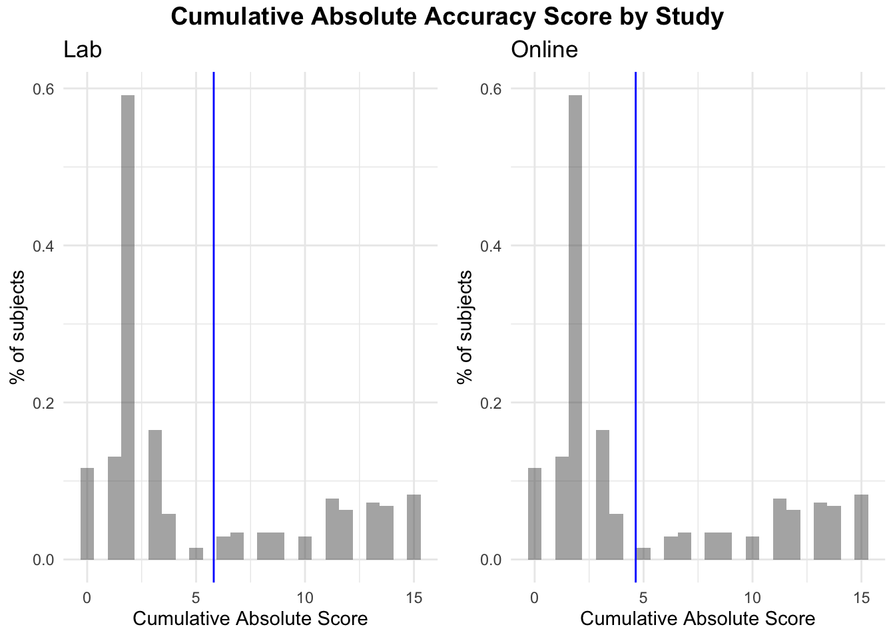

The purpose of this notebook is explore the distribution of dependent variables for Study SGC3A.
CODE
#IMPORT DATA df_items <-read_rds('data/sgc3a_items.rds')df_subjects <-read_rds('data/sgc3a_participants.rds')#SEPARATE ITEM DATA BY QUESTION TYPEdf_scaffold <- df_items %>%filter(q <6)df_test <- df_items %>%filter(q >6) %>%filter (q %nin%c(6,9))
3.1 Sample
3.1.1 Data Collection
Data was initially collected (in person, SONA groups in computer lab) in Fall 2017. In Spring 2018, additional data were collected after small modifications were made to the experimental platform to increase the size of multiple-choice input buttons, and to add an additional free-response question following the main task block. In Fall 2021, the study was replicated using asynchronous, online SONA pool, with additional participants collected in Winter 2022.
CODE
title ="Participants by Condition and Data Collection Period"cols =c("Control Condition","Impasse Condition","Total for Period")cont <-table(df_subjects$term, df_subjects$condition)cont %>%addmargins() %>%kbl(caption = title, col.names = cols) %>%kable_classic()
Participants by Condition and Data Collection Period
Descriptive Statistics of Participant Age and Gender
min
Q1
median
Q3
max
mean
sd
n
missing
female
lab
18
19
20
21
33
20.4
2.12
126
0
78
online
18
20
20
21
31
20.6
2.00
204
0
137
For in-person collection, 126 participants (60 % female ) undergraduate STEM majors at a public American University participated in person in exchange for course credit (age: 18 - 33 years). Participants were randomly assigned to one of two experimental groups.
For online replication 204 participants (70 % female ) undergraduate STEM majors at a public American University participated online, asynchronously in exchange for course credit (age: 18 - 31 years). Participants were randomly assigned to one of two experimental groups.
3.2 Response Accuracy
3.2.1 Cumulative Scores
Cumulative scores indicate the response accuracy by participant across all items in the graph comprehension task.
3.2.1.1 Cumulative Absolute Score
Recall from TODO cross reference scoring that the absolute score indicates if the subject’s response for a particular item was perfectly correct: whether they selected all correct answer options and no others. Absolute score for an individual items ranges is either 0 or 1.
Descriptive Statistics of Response Accuracy (Absolute Score)
min
Q1
median
Q3
max
mean
sd
n
missing
lab
1
2
3
11
15
5.81
4.89
126
0
online
0
2
2
8
15
4.64
4.73
204
0
For in person collection, cumulative absolute scores (n = 126) range from 1 to 15 with a mean score of (M = 5.81, SD = 4.89).
For online replication, (online) cumulative accuracy scores (n = 204) range from 0 to 15 with a mean score of (M = 4.64, SD = 4.73).
CODE
#VISUALIZE distribution of response accuracyplab <-gf_dhistogram(~absolute_score, data = df_subjects) %>%gf_vline(xintercept =~abs.stats["lab",]$mean, color ="blue") +labs(title="Lab", x ="Cumulative Absolute Score", y="% of subjects") +theme_minimal()ponline <-gf_dhistogram(~absolute_score, data = df_subjects) %>%gf_vline(xintercept =~abs.stats["online",]$mean, color ="blue") +labs(title="Online", x ="Cumulative Absolute Score", y="% of subjects") +theme_minimal()plot <-ggarrange(plab, ponline, common.legend =TRUE, nrow =1, ncol =2)annotate_figure(plot, top =text_grob("Cumulative Absolute Accuracy Score by Study",color ="black", face ="bold", size =14))

TODO double check that the subject-totals match the sum of the item level totals #### Cumulative Interpretation Scores
3.2.2 Item Score
Item scores indicate the response accuracy by a participant on each individual question in the graph comprehension task.
3.3 Response Latency
TODO: Investigate super high and super low response times..
TODO: Investigate appropriate models for response time data. (see: https://lindeloev.github.io/shiny-rt/).
Especially see https://lindeloev.github.io/shiny-rt/ for ideas on modelling reaction time data
3.3.1 Time on Study
CODE
#DESCRIBE distribution of response timetime.stats <-rbind("lab"= df_subjects %>%filter(mode =='lab-synch') %>%select(totaltime_m) %>%unlist() %>%favstats(),"online"= df_subjects %>%filter(mode =='asynch') %>%select(totaltime_m) %>%unlist() %>%favstats())title ="Descriptive Statistics of Response Latency (Time on Study)"time.stats %>%kbl(caption = title) %>%kable_classic()
Descriptive Statistics of Response Latency (Time on Study)
min
Q1
median
Q3
max
mean
sd
n
missing
lab
6.01
10.50
12.2
14.4
23.9
12.8
3.37
126
0
online
2.91
9.18
11.5
15.0
111.0
13.4
9.21
204
0
Total time on study for in person subjects (n = 126) ranged from 6.01 to 23.86 minutes with a mean duration of (M = 12.8, SD = 3.37).
Total time on study for online replication subjects (n = 204) ranged from 2.91 to 111.02 minutes with a mean duration of (M = 13.37, SD = 9.21).
CODE
#VISUALIZE distribution of response timeplab <-gf_dhistogram(~totaltime_m, data = df_subjects) %>%gf_vline(xintercept =~time.stats["lab",]$mean, color ="black") %>%gf_fitdistr(dist="gamma", color="red")+labs(title="Lab", x ="Total Time (mins)", y ="% subjects") +theme_minimal()ponline <-gf_dhistogram(~totaltime_m, data = df_subjects) %>%gf_vline(xintercept =~time.stats["online",]$mean, color ="black") %>%gf_fitdistr(dist ="gamma", color="red")+labs(title="Online", x ="Total Time (mins)", y ="% subjects") +theme_minimal()plot <-ggarrange(plab, ponline, common.legend =TRUE, nrow =1, ncol =2)annotate_figure(plot, top =text_grob("Total Time by Study Mode",color ="black", face ="bold", size =14),bottom =text_grob("fit by Gamma distribution", face ="italic", size =10))
TODO consider log transform of response latency datasee archive sgc3A_participants.Rmd
---# title: 'Exploration'subtitle: 'Study SGC3A | 3 Exploration'# author: 'Amy Rae Fox'# always_allow_html: true # header-includes:# - \usepackage{amsmath}# output:# html_document:# theme: yeti# code_folding: hide# fig_caption: yes# number_sections: yes# toc: yes# toc_depth: 4# toc_float:# collapsed: no# smooth_scroll: yes# pdf_document: # toc: true# toc_depth: 3# latex_engine: xelatex# font-family: "DejaVu Sans"# mainfont: "DejaVu Sans"---\newpage# Exploration {#sec-SGC3A-exploration}**THIS NOTEBOOK IS INCOMPLETE**TODO- double check which Qs in task are non-discriminating (6 and 9?)```{r}#| label: SETUP#| echo : true#| warning : false#| message : falselibrary(tidyverse) #ALL THE THINGSlibrary(kableExtra) #printing tables library(mosaic) #simple descriptives [favstats]library(Hmisc) # %nin% operatorlibrary(ggpubr) #arrange plots# library(pastecs) #stat.desc# library(car) #ANOVA, qqplot# library(effectsize) #effect size#set some output optionslibrary(dplyr, warn.conflicts =FALSE)options(dplyr.summarise.inform =FALSE)options(ggplot2.summarise.inform =FALSE)options(scipen=1, digits=3)```*The purpose of this notebook is explore the distribution of dependent variables for Study SGC3A.*```{r}#| label: IMPORT-DATA#| echo : true#| warning : false#| message : false#IMPORT DATA df_items <-read_rds('data/sgc3a_items.rds')df_subjects <-read_rds('data/sgc3a_participants.rds')#SEPARATE ITEM DATA BY QUESTION TYPEdf_scaffold <- df_items %>%filter(q <6)df_test <- df_items %>%filter(q >6) %>%filter (q %nin%c(6,9))```## Sample### Data CollectionData was initially collected (in person, SONA groups in computer lab) in Fall 2017. In Spring 2018, additional data were collected after small modifications were made to the experimental platform to increase the size of multiple-choice input buttons, and to add an additional free-response question following the main task block. In Fall 2021, the study was replicated using asynchronous, online SONA pool, with additional participants collected in Winter 2022.```{r}#| label : INSPECT-DATA-COLLECTIONtitle ="Participants by Condition and Data Collection Period"cols =c("Control Condition","Impasse Condition","Total for Period")cont <-table(df_subjects$term, df_subjects$condition)cont %>%addmargins() %>%kbl(caption = title, col.names = cols) %>%kable_classic()```### Participants```{r PARTICIPANTS}#Describe participantssubject.stats <-rbind("lab"= df_subjects %>%filter(mode =='lab-synch') %>%select(age) %>%unlist() %>%favstats(),"online"= df_subjects %>%filter(mode =="asynch") %>%select(age) %>%unlist() %>%favstats()) subject.stats$female <-c( (df_subjects %>%filter(mode =='lab-synch') %>%filter(gender=="Female") %>%count())$n, (df_subjects %>%filter(mode =="asynch") %>%filter(gender=="Female") %>%count())$n)title ="Descriptive Statistics of Participant Age and Gender"subject.stats %>%kbl (caption = title) %>%kable_classic()```For **in-person** collection, `r subject.stats["lab",]$n` participants (`r round(subject.stats["lab",]$female/subject.stats["lab",]$n,1) * 100` % female ) undergraduate STEM majors at a public American University participated *in person* in exchange for course credit (age: `r (subject.stats['lab','min'])` - `r (subject.stats['lab','max'])` years). Participants were randomly assigned to one of two experimental groups.For **online replication** `r subject.stats["online",]$n` participants (`r round(subject.stats["online",]$female/subject.stats["online",]$n,1) * 100` % female ) undergraduate STEM majors at a public American University participated *online, asynchronously* in exchange for course credit (age: `r (subject.stats['online','min'])` - `r (subject.stats['online','max'])` years). Participants were randomly assigned to one of two experimental groups.## Response Accuracy### Cumulative ScoresCumulative scores indicate the response accuracy by participant across all items in the graph comprehension task. #### Cumulative Absolute ScoreRecall from **TODO cross reference scoring** that the absolute score indicates if the subject's response for a particular item was *perfectly correct*: whether they selected all correct answer options and no others. Absolute score for an individual items ranges is either 0 or 1.```{r}#| label: ABS-SUBJECTtitle ="Descriptive Statistics of Response Accuracy (Absolute Score)"abs.stats <-rbind("lab"= df_subjects %>%filter(mode =='lab-synch') %>%select(absolute_score) %>%unlist() %>%favstats(),"online"= df_subjects %>%filter(mode =="asynch") %>%select(absolute_score) %>%unlist() %>%favstats()) abs.stats %>%kbl (caption = title) %>%kable_classic()```For *in person* collection, cumulative absolute scores (n = `r abs.stats["lab",]$n`) range from `r round(abs.stats["lab",]$min,2)` to `r round(abs.stats["lab",]$max,2)` with a mean score of (M = `r round(abs.stats["lab",]$mean,2)`, SD = `r round(abs.stats["lab",]$sd,2)`). For *online replication*, (online) cumulative accuracy scores (n = `r abs.stats["online",]$n`) range from `r round(abs.stats["online",]$min,2)` to `r round(abs.stats["online",]$max,2)` with a mean score of (M = `r round(abs.stats["online",]$mean,2)`, SD = `r round(abs.stats["online",]$sd,2)`). ```{r}#| label: VIS-ABS-SCORE#| #VISUALIZE distribution of response accuracyplab <-gf_dhistogram(~absolute_score, data = df_subjects) %>%gf_vline(xintercept =~abs.stats["lab",]$mean, color ="blue") +labs(title="Lab", x ="Cumulative Absolute Score", y="% of subjects") +theme_minimal()ponline <-gf_dhistogram(~absolute_score, data = df_subjects) %>%gf_vline(xintercept =~abs.stats["online",]$mean, color ="blue") +labs(title="Online", x ="Cumulative Absolute Score", y="% of subjects") +theme_minimal()plot <-ggarrange(plab, ponline, common.legend =TRUE, nrow =1, ncol =2)annotate_figure(plot, top =text_grob("Cumulative Absolute Accuracy Score by Study",color ="black", face ="bold", size =14))```**TODO** double check that the subject-totals match the sum of the item level totals #### Cumulative Interpretation Scores### Item ScoreItem scores indicate the response accuracy by a participant on each individual question in the graph comprehension task. ## Response Latency- [TODO: Investigate super high and super low response times.]{style="color: red;"}.- [TODO: Investigate appropriate models for response time data. (see: https://lindeloev.github.io/shiny-rt/) ]{style="color: red;"}.- Especially see https://lindeloev.github.io/shiny-rt/ for ideas on modelling reaction time data### Time on Study```{r DESCRIBE-TOTALTIME}#DESCRIBE distribution of response timetime.stats <-rbind("lab"= df_subjects %>%filter(mode =='lab-synch') %>%select(totaltime_m) %>%unlist() %>%favstats(),"online"= df_subjects %>%filter(mode =='asynch') %>%select(totaltime_m) %>%unlist() %>%favstats())title ="Descriptive Statistics of Response Latency (Time on Study)"time.stats %>%kbl(caption = title) %>%kable_classic()```Total time on study for *in person* subjects (n = `r time.stats["lab",]$n`) ranged from `r round(time.stats["lab",]$min,2)` to `r round(time.stats["lab",]$max,2)` minutes with a mean duration of (M = `r round(time.stats["lab",]$mean,2)`, SD = `r round(time.stats["lab",]$sd,2)`).Total time on study for *online replication* subjects (n = `r time.stats["online",]$n`) ranged from `r round(time.stats["online",]$min,2)` to `r round(time.stats["online",]$max,2)` minutes with a mean duration of (M = `r round(time.stats["online",]$mean,2)`, SD = `r round(time.stats["online",]$sd,2)`).```{r}#| label : VIS-TOTALTIME#| message : false#| warning : false#VISUALIZE distribution of response timeplab <-gf_dhistogram(~totaltime_m, data = df_subjects) %>%gf_vline(xintercept =~time.stats["lab",]$mean, color ="black") %>%gf_fitdistr(dist="gamma", color="red")+labs(title="Lab", x ="Total Time (mins)", y ="% subjects") +theme_minimal()ponline <-gf_dhistogram(~totaltime_m, data = df_subjects) %>%gf_vline(xintercept =~time.stats["online",]$mean, color ="black") %>%gf_fitdistr(dist ="gamma", color="red")+labs(title="Online", x ="Total Time (mins)", y ="% subjects") +theme_minimal()plot <-ggarrange(plab, ponline, common.legend =TRUE, nrow =1, ncol =2)annotate_figure(plot, top =text_grob("Total Time by Study Mode",color ="black", face ="bold", size =14),bottom =text_grob("fit by Gamma distribution", face ="italic", size =10))```**TODO consider log transform of response latency data** *see* archive sgc3A_participants.Rmd### Time on Question**TODO time on question**## Resources- https://rpkgs.datanovia.com/ggpubr/reference/index.html